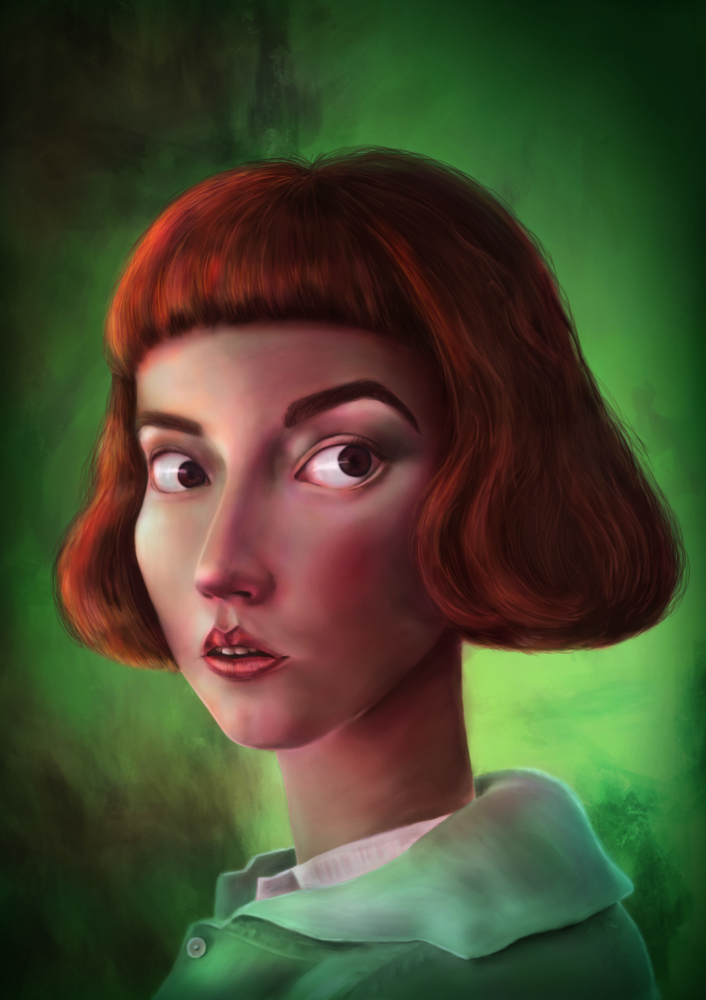
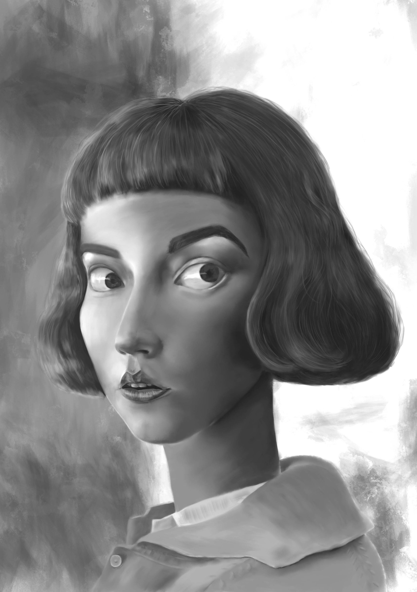
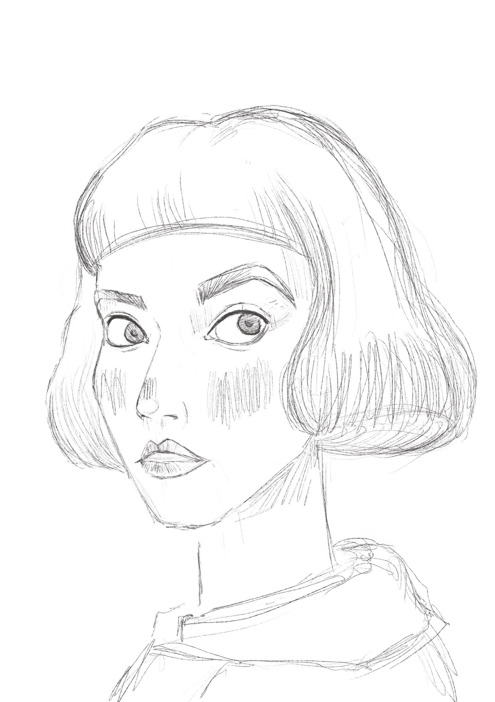

01Photoshop Avanzato
Beth Harmon
Ritratto in pittura digitale di Beth Harmon, dallo studio tonale in bianco e nero al colore.


↔ Trascina il cursore per passare dallo studio in bianco e nero al colore.
Bozze · Studi preliminari
